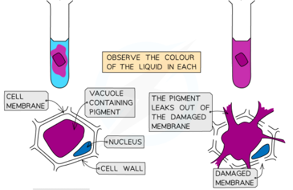
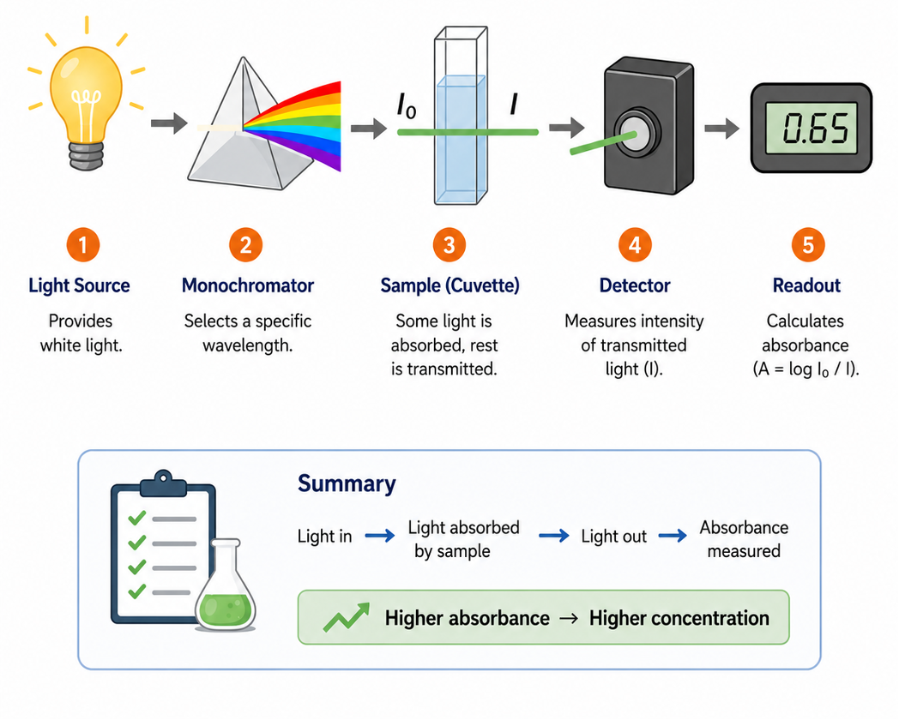
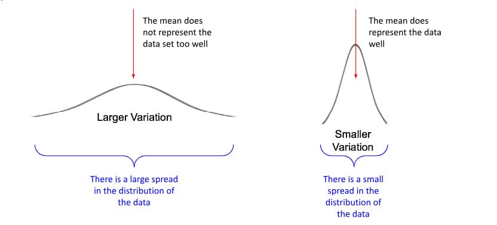
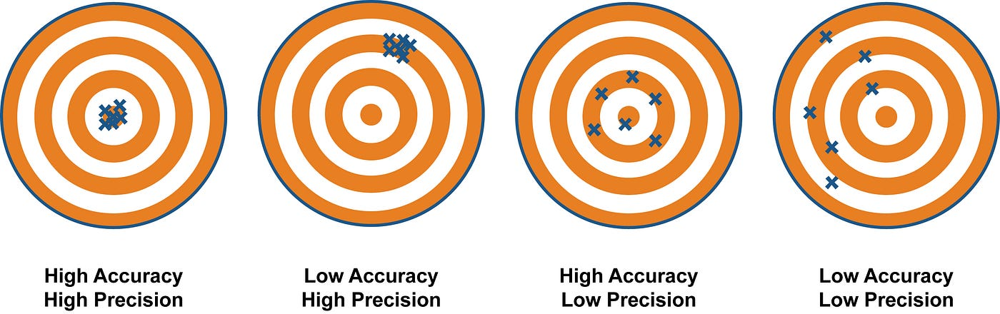

Beetroot cells contain a dark purple-red pigment called betalain, which is safely stored inside the cell's . To leave the cell, this pigment must pass through the tonoplast and the cell membrane, which are primarily composed of a bilayer. As temperature increases, the molecules gain kinetic energy, causing the membrane to increase in . High temperatures eventually damage the membrane and denature its proteins, allowing the pigment to leak out.

Now that we know why the pigment leaks, let's review how we measure it. A colorimeter measures the intensity of light passing through a liquid.
In your protocol, the colorimeter is set to a 530 nm (blue/green) filter. A light beam passes through the sample . The amount of light that successfully passes through the solution is known as , while the light that is taken up by the solution is called . If you use a hotter water bath, more pigment leaks. Therefore, the transmission value will . Before taking measurements, you must recalibrate (zero) the machine between each sample using a of distilled water.
Students often think a "blank" cuvette used for calibration should just be an empty cuvette. False! A blank must contain everything except the specific substance you are measuring (e.g., the solvent or buffer). This cancels out the light absorbance of the glass, the water, and any other background reagents.
In this experiment, you don't just calculate the mean; you need to evaluate how spread out your data is. Standard Deviation (SD) is a measure of this spread.
Note: You will not need to calculate this by hand! In Google Sheets, you will simply use the formula =STDEV().

Review the model transmission data below. Notice how the number of trials varies for each temperature.
| Temp (°C) | T1 | T2 | T3 | T4 | T5 | Repeats | Mean (%) | SD |
|---|---|---|---|---|---|---|---|---|
| 20 | 81 | 83 | - | - | - | 2 | 82.0 | 1.41 |
| 50 | 45 | 46 | 45 | 45 | 44 | 5 | 45.0 | 0.71 |
| 70 | 10 | 24 | 18 | - | - | 3 | 17.3 | 7.02 |
1. Based on the data above, which temperature's mean average is the most reliable?
2. Based on the Standard Deviation, which temperature's data has the highest uncertainty (lowest precision)?
Before evaluating your specific experiment, let's review key data terminology using the classic dartboard analogy. Imagine the "bullseye" is the true, accepted value you are trying to measure (e.g., the exact percentage of actual pigment leakage).

All darts are tightly clustered right in the bullseye. Your measurements are very close to the true value (high accuracy) and very consistent with each other (high precision).
All darts are tightly clustered together, but far from the bullseye. This indicates a Systematic Error (e.g., a poorly calibrated colorimeter that shifts all data equally in one direction).
Darts are scattered randomly across the board. This indicates high Random Error. You need more repeats to calculate a reliable mean average.
Now, put it all together! Drag the correct word from the bank and drop it into the zone next to its definition.
Below are several steps from an experimental design. For each step, select the better option, indicate whether it primarily enhances Validity (V), Reliability (R), or Accuracy (A), and then select the correct justification for your choice.
| Step | Options (Select Best) | Validity / Reliability / Accuracy | Justification |
|---|---|---|---|
| 1 |
|
||
| 2 |
|
||
| 3 |
|
||
| 4 |
|
||
| 5 |
|
||
| 6 |
|
||
| 7 |
|
||
| 8 |
|
||
| 9 |
|
||
| 10 |
|